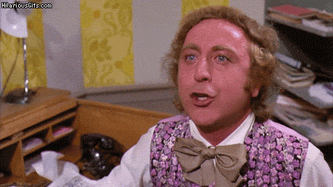

Why?Why Not. What?We will use this opportunity to survey the tools used in the major results concerning bounds for high moments of families of L-functions. Where?The beautiful premises of Nesin Mathematics Village is going to provide the idlylic location for this very timely workshop. |

|
When?July 30 - August 5, 2018. You should arrive a day before on Sunday July 29 to İzmir. |
A HaikuFront desk moves you outAt the Grand Hilbert Hotel For each newcomer. |
How?
At your own or your department's expense, we provide nothing. |
 |
Who?
| Organizing Committee | Scientific Advisory Board | List of Participants |
|---|---|---|
| Thomas Hulse | Thomas Hulse | Thomas Hulse |
| Eren Mehmet Kıral | Jeffrey Hoffstein | Jeffrey Hoffstein |
| Chan Ieong Kuan | Eren Mehmet Kıral | Eren Mehmet Kıral |
| Chan Ieong Kuan | Chan Ieong Kuan | |
| Min Lee | Min Lee | |
| Li-Mei Lim | Li-Mei Lim* | |
| David Lowry-Duda | David Lowry-Duda | |
| Alex Walker | Alex Walker | |
| Didier Lesesvre* | ||
| Naomi Tanabe* | ||
| Alia Hamieh* | ||
| Kevser Aktas* | ||
| * = Not yet confirmed |
Last updated: 19 January 2018